JavaScript
4.1 Introducción e integración con HTML
JavaScript (JS) es un lenguaje de programación interpretado creado en 1995 por Brendan Eich para añadir interactividad a Netscape Navigator 2.0.
Datos históricos:
- nombre original: Mocha;
- después se rebautiza como JavaScript mediante acuerdo con Sun Microsystems;
- no es Java;
- en 1997 comienza su estandarización en ECMA como ECMAScript;
- posteriormente también se convierte en estándar ISO;
- con JS aparece el concepto de DHTML o HTML dinámico.
JS normalmente se ejecuta en el lado cliente dentro del navegador, aunque hoy también puede ejecutarse en servidor mediante Node.js; ese uso no forma parte del tema.
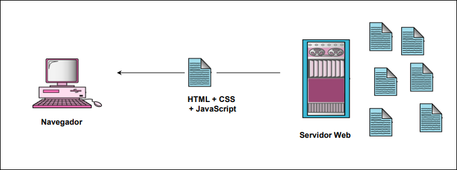
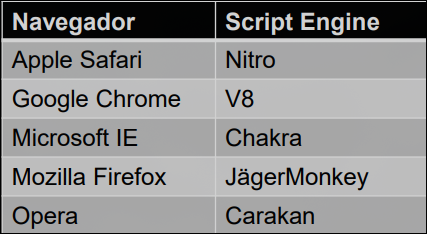
Integración con HTML
Se incluye mediante la etiqueta script:
| Forma | Uso |
|---|---|
| Código interno | El código va como contenido de <script>. |
| Fichero externo | Se enlaza con <script src="codigo.js"></script>. |
Para mejorar la carga de la página se aconseja colocar el script al final, antes de </body>, de modo que el HTML principal ya esté creado cuando JS lo manipule.
Microsoft desarrolló dos versiones propias para Internet Explorer:
- VBScript: sintaxis basada en Visual Basic e incompatible con otros navegadores.
- JScript: versión similar a ECMAScript, pero con diferencias en el modelo de objetos.
Las incompatibilidades entre JScript y JavaScript llevaron al W3C a definir el HTML DOM como criterio común.
4.2 HTML DOM y APIs del navegador
El DOM (Document Object Model) es una API creada por W3C para acceder de forma estándar a documentos HTML, XML y SVG, permitiendo modificar contenido, estructura y estilo.
| Parte | Descripción |
|---|---|
| Core DOM | Modelo estándar para cualquier documento estructurado. |
| XML DOM | Modelo estándar para documentos XML. |
| HTML DOM | Modelo estándar para documentos HTML. |
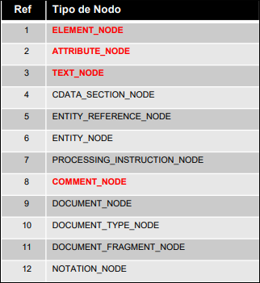
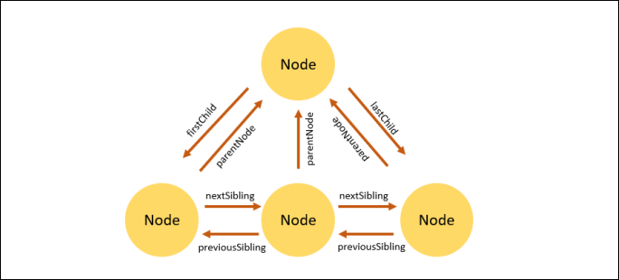
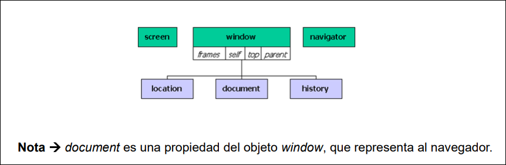
Objetos e interfaces principales
document representa la página mediante el árbol DOM. Es una propiedad de window, que representa el navegador, y una instancia de HTMLDocument.
| Objeto/interfaz | Uso |
|---|---|
window |
Objeto global de la ventana o pestaña; contiene document. |
document / HTMLDocument |
Representa el documento HTML completo. |
Element / HTMLElement |
Representa una etiqueta del documento. |
Attr |
Representa atributos; propiedades como name, value, specified. |
Text |
Nodo de texto; propiedades como data, length; métodos como appendData(), deleteData(), insertData(), replaceData(). |
Comment |
Comentarios del documento. |
Style / CSSStyleDeclaration |
Estilos asociados a etiquetas; cssText, length, parentRule, getPropertyValue(), setProperty(), etc. |
Event |
Eventos asociados a etiquetas. |
location |
URL actual y redirecciones. |
history |
Historial de navegación. |
navigator |
Datos del navegador/dispositivo. |
screen |
Datos de pantalla. |
frames |
Acceso a marcos o iframe. |
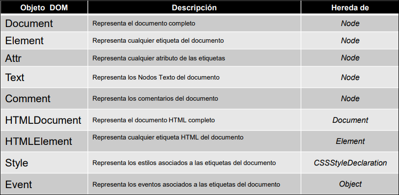
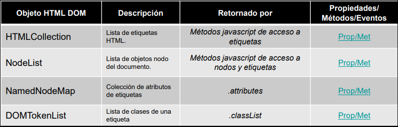
Árbol DOM
Una página HTML está formada por etiquetas anidadas que el navegador transforma en un árbol:
- cada etiqueta crea un nodo elemento;
- el texto dentro de una etiqueta crea un nodo de texto;
- las etiquetas hijas se convierten en nodos hijos del nodo padre.
Con el DOM, JavaScript puede cambiar etiquetas, atributos, estilos, eliminar o añadir nodos, reaccionar a eventos y crear eventos nuevos.
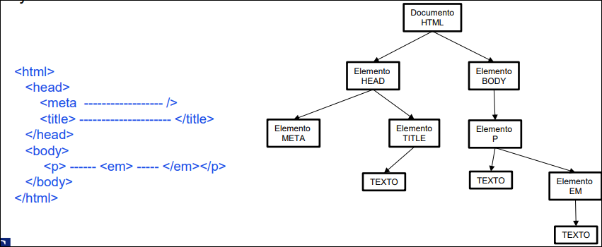
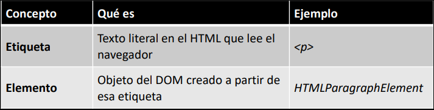
Selección y contenido
| Método | Devuelve |
|---|---|
document.getElementById("id") |
Elemento cuyo id coincide. |
document.getElementsByClassName("nombre") |
HTMLCollection con elementos que tienen esa clase. |
document.getElementsByName("nombre") |
HTMLCollection con elementos cuyo name coincide. |
document.getElementsByTagName("tag") |
HTMLCollection con elementos de esa etiqueta. |
document.querySelector("selectorCSS") |
Primer elemento que coincide con el selector CSS. |
document.querySelectorAll("selectorCSS") |
NodeList con todos los elementos que coinciden. |
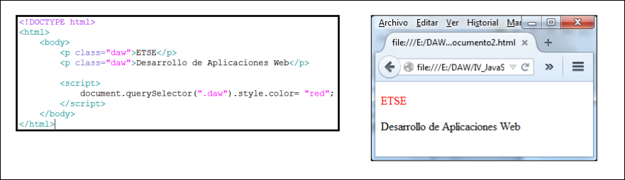
Propiedades de contenido:
| Propiedad | Uso |
|---|---|
nodeValue |
Contenido del nodo actual. |
nodeName |
Nombre del nodo actual. |
nodeType |
Tipo de nodo: 1 elemento, 2 atributo, 3 texto, 8 comentario. |
innerHTML |
Contenido interpretando HTML. |
textContent |
Texto del nodo y sus hijos sin interpretar HTML. |
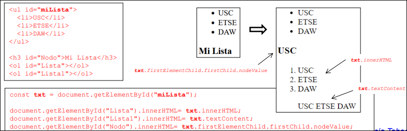
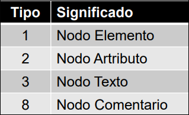
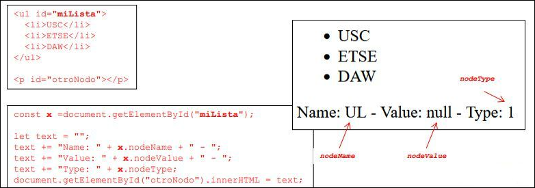
Colecciones DOM
| Colección | Descripción | Propiedades/métodos |
|---|---|---|
HTMLCollection |
Lista de etiquetas HTML; se obtiene con métodos de acceso a etiquetas. | length, item(index), namedItem(id). |
NodeList |
Lista de nodos; puede incluir nodos de texto o atributos. | length, item(index), entries(), forEach(), keys(), values(). |
NamedNodeMap |
Colección de atributos de una etiqueta, accesible con .attributes. |
length, getNamedItem(), setNamedItem(), item(), removeNamedItem(). |
DOMTokenList |
Lista de clases de una etiqueta, accesible con .classList. |
length, value, add(), contains(), remove(), replace(), entries(), forEach(), item(), keys(), values(). |
Similitudes entre HTMLCollection y NodeList:
- son listas tipo array;
- tienen
length; - permiten acceso por índice.
Diferencias:
HTMLCollectionpermite acceso por nombre,ido índice;NodeListsolo por índice;NodeListpuede contener nodos de atributo y nodos de texto;HTMLCollectionsuele ser viva yNodeListestática; por eso una puede detectar cambios del DOM automáticamente y la otra no.
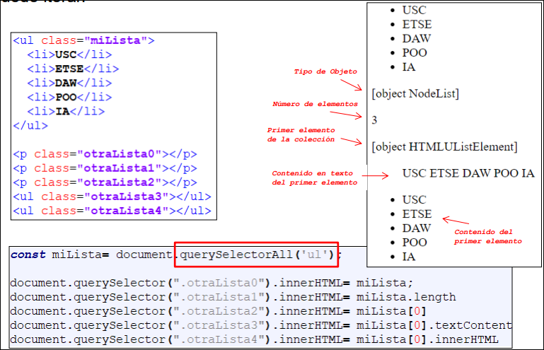
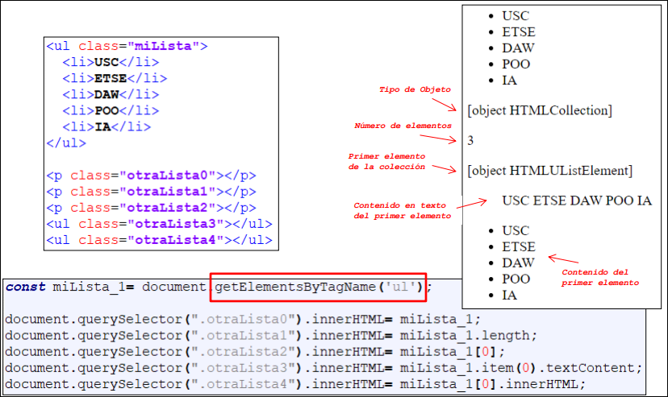
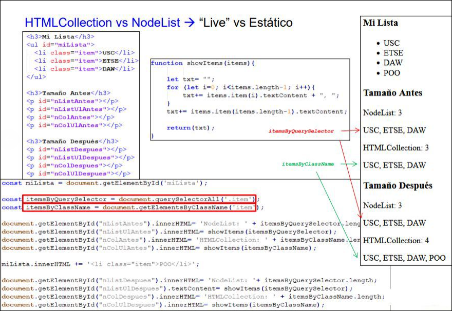
Crear, eliminar y recorrer nodos
| Método/propiedad | Uso |
|---|---|
document.createElement("tag") |
Crea un nodo elemento. |
document.createTextNode("data") |
Crea un nodo de texto. |
appendChild(nodo) |
Inserta un nodo hijo. |
removeChild(nodo) |
Elimina un nodo hijo. |
replaceChild(nuevo, viejo) |
Reemplaza un nodo hijo. |
parentNode |
Nodo padre. |
previousSibling / nextSibling |
Hermano anterior o siguiente. |
firstChild / lastChild |
Primer o último hijo, incluidos nodos de texto. |
firstElementChild |
Primer hijo que es elemento HTML. |
childNodes |
Todos los nodos hijos. |
children |
Solo elementos hijos. |
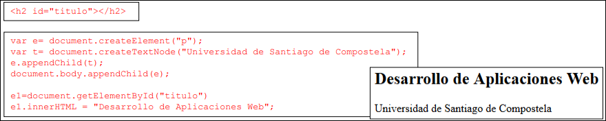
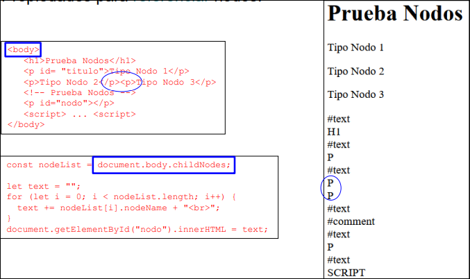
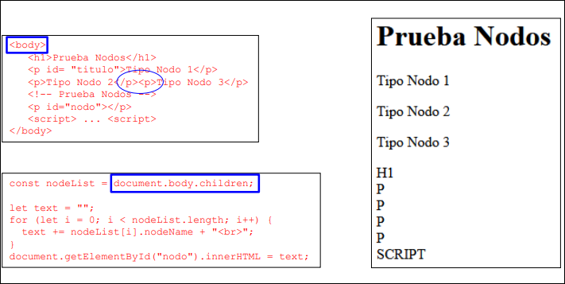
Atributos y estilos
Acceso a atributos:
| Método/propiedad | Uso |
|---|---|
element.atributo |
Acceso directo al valor del atributo. |
element.getAttribute("atributo") |
Valor del atributo como string. |
element.getAttributeNode("atributo") |
Nodo Attr del atributo. |
element.attributes |
NamedNodeMap con los atributos. |
element.getAttributeNames() |
Array con nombres de atributos. |
Manipulación:
| Método | Uso |
|---|---|
setAttribute("atributo", "valor") |
Crea o modifica un atributo. |
hasAttribute("atributo") |
Comprueba si existe. |
removeAttribute("atributo") |
Elimina el atributo. |
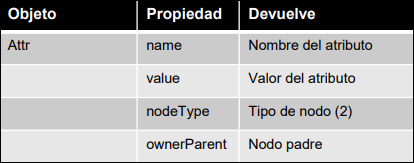
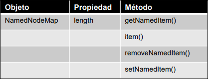
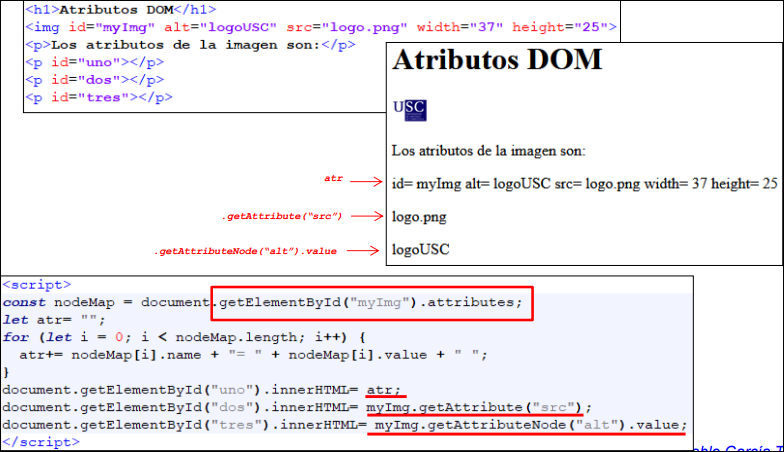
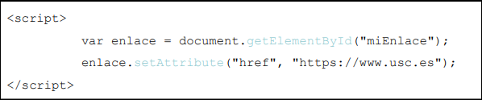
Estilos:
| Acceso | Uso |
|---|---|
element.style |
Acceso al estilo en línea del elemento. |
window.getComputedStyle(element, "") |
Acceso a todos los estilos calculados del elemento. |
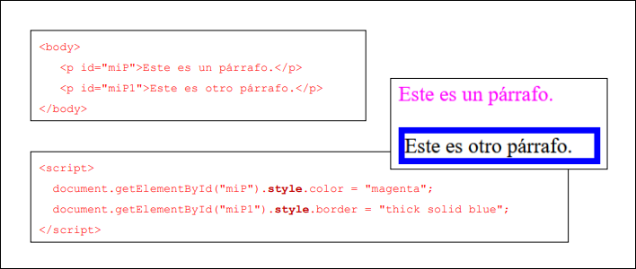
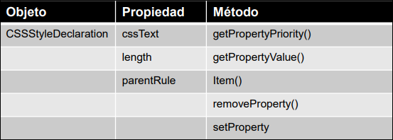
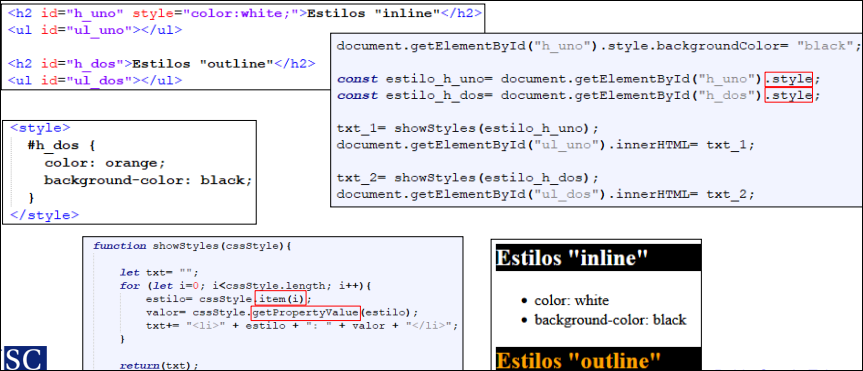
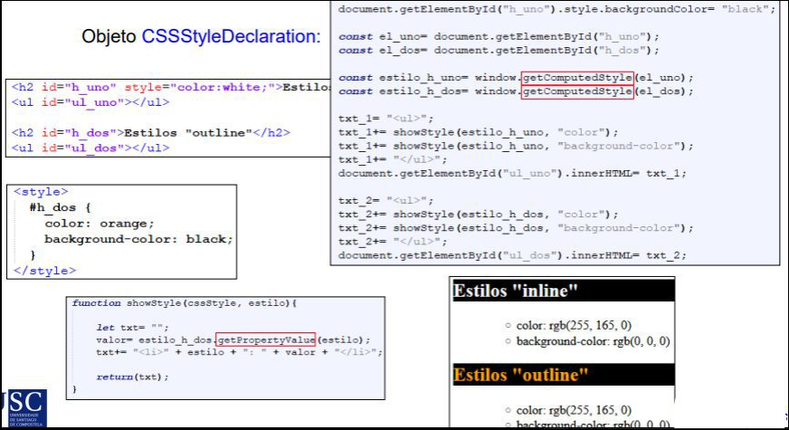
Eventos DOM
Un evento ocurre cuando el usuario o el navegador realizan una acción: click, teclado, resize, carga de página, etc. Cuando ocurre, se lanza una función programable.
Tres formas de asociar eventos:
| Forma | Característica |
|---|---|
| Atributos HTML | onevento="funcion()"; código antiguo, mezcla JS con HTML. |
| Manejadores DOM | element.onevento = funcion; solo permite una función por evento. |
| Listeners DOM | element.addEventListener("event", funcion); permite varias funciones y es la forma recomendada. |
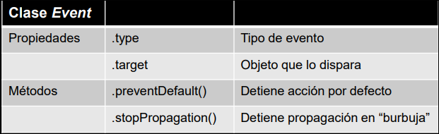
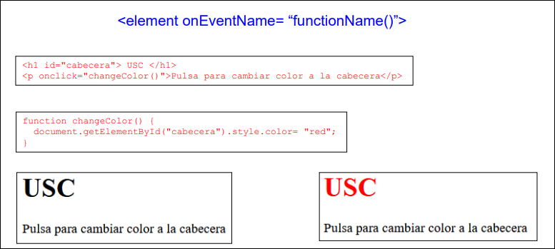
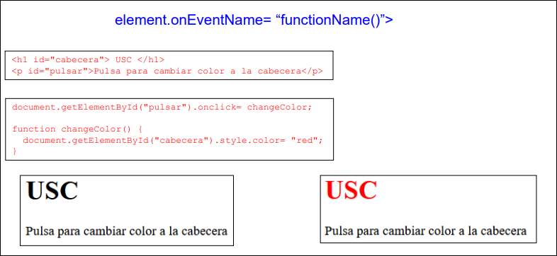
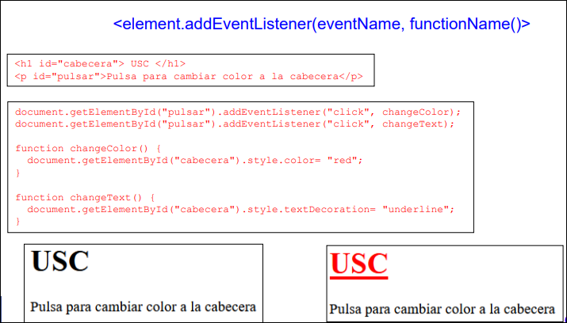
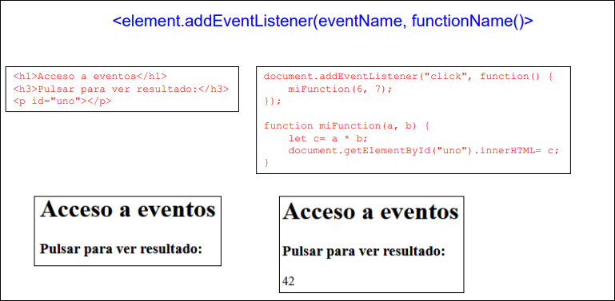
Flujo de eventos: si el evento ocurre en una etiqueta interior, puede propagarse hacia fuera (bubbling, false) o desde fuera hacia dentro (capturing, true).
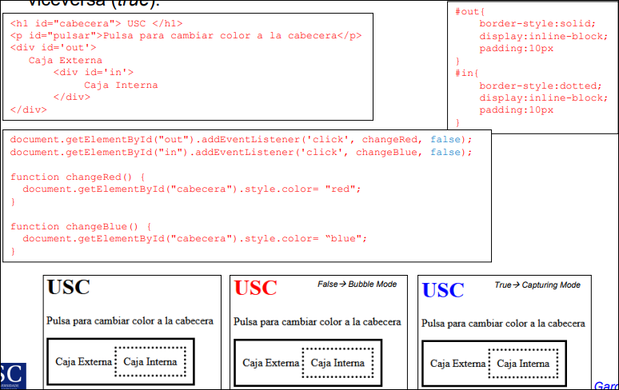
El objeto evento permite consultar datos como type o target.
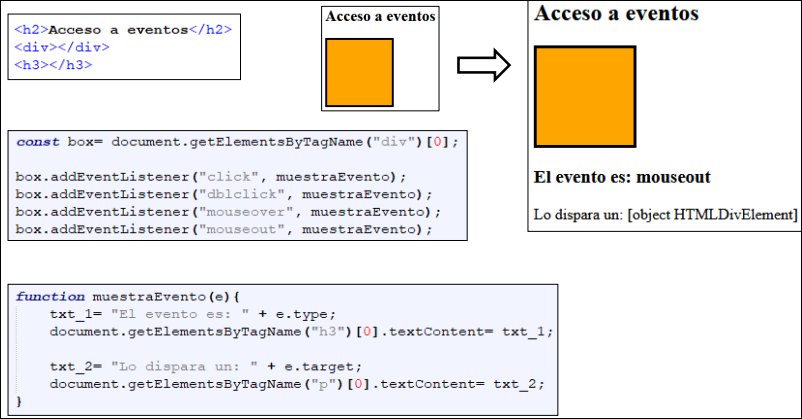
APIs JS
Una API permite a un programa interactuar con otros programas o scripts accediendo a sus datos.
| Categoría | Ejemplos |
|---|---|
| APIs de navegador | DOM, Web Audio, WebRTC, Canvas, WebGL, Geolocation, Storage. |
| APIs de terceros | Facebook, Twitter, Google Maps, YouTube, etc.; no vienen incluidas por defecto. |
APIs citadas:
- Geolocation: obtiene latitud y longitud si el usuario da permiso; se usa con
navigator.geolocation. - localStorage y sessionStorage: almacenamiento local en cliente, alternativo a cookies.
- localStorage no tiene fecha de expiración.
- sessionStorage dura la sesión y se pierde al cerrar la ventana.
- Datos de storage: se guardan con
setItem(nombreDato, valorDato)o como atributo (localStorage.nombreDato = valorDato), y se recuperan congetItem(nombreDato)olocalStorage.nombreDato. - history: acceso al historial de páginas visitadas.
- console: depuración;
console.log()registra valores o mensajes.
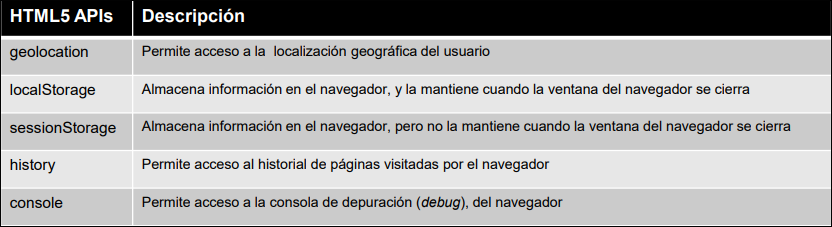
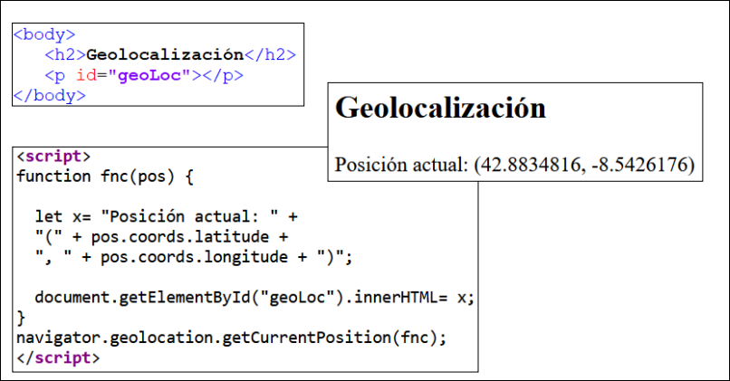
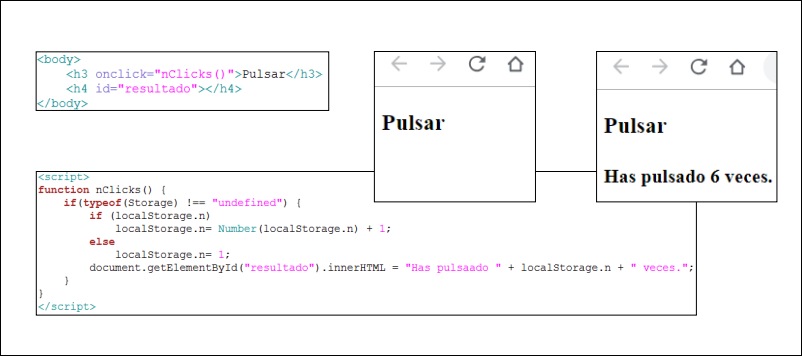
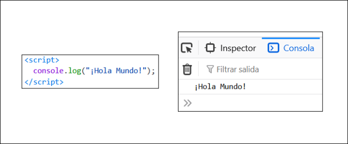
4.3 Sintaxis básica
Reglas generales, variables y tipos
JavaScript:
- distingue mayúsculas y minúsculas;
- usa comentarios como C:
//y/* ... */; - suele terminar instrucciones con
;.
Variables:
| Declaración | Ámbito de bloque | Redeclaración | Reasignación |
|---|---|---|---|
var nombre; |
No | Sí | Sí |
let nombre; |
Sí | No | Sí |
const nombre = valor; |
Sí | No | No |
Tipos citados:
| Tipo | Idea |
|---|---|
string |
Cadenas de texto. |
number |
Valores numéricos. |
boolean |
Booleanos. |
Object |
Objetos. |
null |
Nulo. |
undefined |
No definido. |
typeof(variable) devuelve el tipo.
Conversión:
- implícita: coerción automática, frecuentemente hacia cadenas;
- explícita:
parseFloat(),parseInt(),toString(),String(),Number(), etc.
Operadores, Math y control de flujo
| Grupo | Operadores o elementos |
|---|---|
| Aritméticos | -, +, *, /, ++, --, %. |
| Lógicos | AND, OR, NOT. |
| Relacionales | ==, !=, >, >=, <, <=, ===, !==. |
| Bit a bit | &, ` |
| Asignación | =, +=, -=, *=, /=, ` |
| Otros | + para concatenar strings, ., ternario ?:, spread .... |
== compara con conversión; === compara valor y tipo.
Math agrupa operaciones matemáticas:
- métodos:
log(),exp(),sqrt(),pow(),abs(),floor(),ceil(),round(),random(),sin(),cos(),tan(),max(),min(), etc.; - constantes:
E,LN2,LN10,LOG2E,LOG10E,PI,SQRT2,SQRT1_2; - el PDF cita
with(Math)para no repetir el objeto, aunque hoy no suele recomendarse.
Estructuras de control:
| Estructura | Uso |
|---|---|
if (...) { ... } else { ... } |
Condicional. |
switch (...) { case ...: ... break; } |
Selección múltiple. |
for(inicial; condicion; incremento) |
Bucle clásico. |
for (dato in objeto) |
Itera claves o índices. |
for (dato of iterable) |
Itera valores. |
while(condicion) |
Bucle con condición inicial. |
do { ... } while(condicion) |
Bucle que se ejecuta al menos una vez. |
Funciones
Las funciones no especifican tipo de parámetros ni de retorno.
| Forma | Idea |
|---|---|
| Declaración | function nombre(parametros) { ... return ... }. |
| Expresión anónima | x = function(parametros) { ... }. |
| Arrow function | x = (parametros) => { ... }; si tiene un argumento se pueden omitir paréntesis. |
| Autoinvocada | (function(parametros) { ... })(valores);; no necesita nombre ni return. |
| Callback | Una función pasada como argumento a otra. |
Reglas importantes:
- se pueden establecer valores por defecto para parámetros;
- se permite número indefinido de parámetros con
...; - los primitivos se pasan por valor;
- los objetos, incluidos arrays, se pasan por referencia;
- las funciones son objetos y tienen
arguments,arguments.lengthytoString().
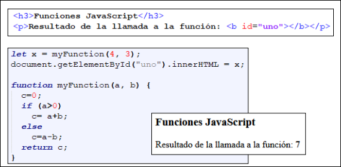
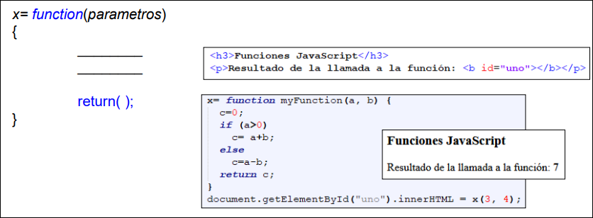
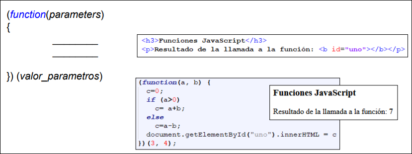
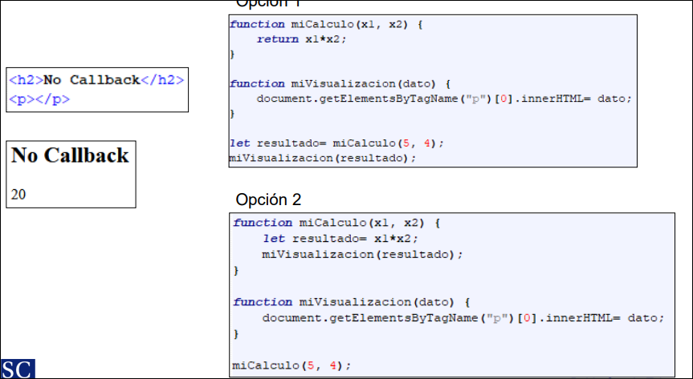
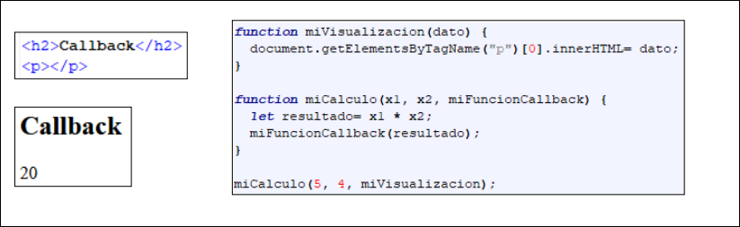
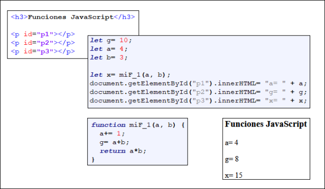
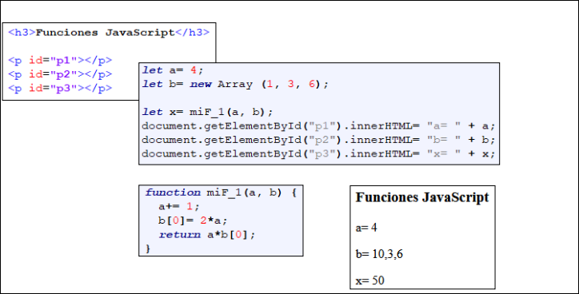
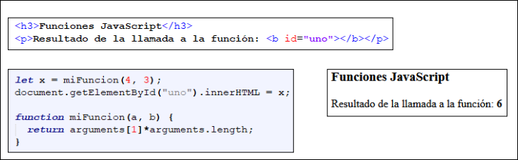
Objetos, arrays y cadenas
Objetos:
- tradicionalmente se instanciaban con
new, invocando una función constructora; - hoy se usa mucho el literal
{ atributo: valor, funcion() { ... } }; - las propiedades son públicas y se accede con
objeto.atributooobjeto["atributo"]; - los métodos se invocan con
objeto.funcion(parametros); - los constructores pueden llamar a la clase padre con
super().
Arrays:
- son objetos;
- pueden crearse con
new, pero se recomiendalet array = []; - tienen tamaño dinámico;
- son heterogéneos.
| Método/propiedad | Uso |
|---|---|
length |
Tamaño del array. |
join() |
Une elementos en una cadena. |
reverse() |
Invierte orden. |
sort() |
Ordena. |
concat() |
Concatena arrays. |
slice() |
Extrae parte. |
Array.from() |
Crea array desde iterable. |
keys() |
Iterador con índices. |
find() |
Primer elemento que cumple una función. |
findIndex() |
Índice del primer elemento que cumple una función. |
forEach() |
Ejecuta una función por elemento. |
map() |
Crea un nuevo array transformado. |
filter() |
Crea array con elementos que devuelven true. |
every() |
true si todos cumplen. |
some() |
true si alguno cumple. |
reduce() |
Reduce de izquierda a derecha a un único valor. |
reduceRight() |
Reduce desde la derecha. |
En forEach, map, filter, every y some, la función recibe (value, index, array). En reduce y reduceRight se añade el acumulador o total.
Cadenas:
- son objetos;
- se recomienda
let cadena = "...", nonew String(); - métodos citados:
fromCharCode(),charCodeAt(),indexOf(),lastIndexOf(),substr(),slice(),substring(),toLowerCase(),toUpperCase(),includes(),startsWith(),endsWith().
Eventos básicos y Date
Eventos citados:
| Evento | Significado |
|---|---|
click |
Pulsar ratón. |
mouseover / mouseout |
Entrar o salir con el ratón. |
load / unload |
Cargar o abandonar página. |
focus / blur |
Activación o pérdida de foco. |
keypress |
Presionar tecla. |
select |
Seleccionar. |
change |
Modificar. |
submit / reset |
Enviar o reiniciar formulario. |
error / abort |
Error o aborto de carga. |
Eventos por elemento:
| Elemento | Eventos citados |
|---|---|
window |
load, unload, blur, focus. |
link |
click, mouseout, mouseover. |
area |
mouseOut, mouseOver. |
image |
abort, error, load. |
form |
reset, submit. |
text, textarea, password |
blur, change, focus, select. |
button, reset, submit, radio, checkbox |
click. |
select |
blur, change, focus. |
| Controles de selección de archivos | blur, focus, select. |
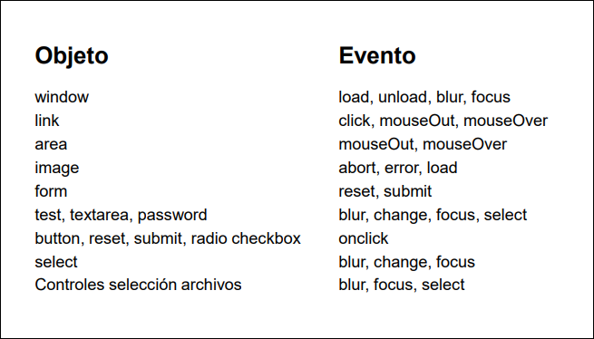
Fechas:
- se gestionan con
Date; - constructores citados:
new Date("mes, dia, ano, horas:minutos:segundos")ynew Date(ano, mes, dia, horas, minutos, segundos, milisegundos); - métodos:
getTime(),getDay(),getDate(),getMonth(),getYear(),getFullYear(),getHours(),getMinutes(),getSeconds(),getMilliseconds(); - métodos
set...equivalentes; - métodos UTC equivalentes;
- conversiones:
toUTCString(),toGMTString().
4.4 JavaScript ES6
En 2015, ECMAScript tuvo una revisión importante llamada ES6 o ECMAScript 6. Desde entonces las revisiones continúan anualmente, pero con menor intensidad.
ES6 introdujo:
letyconst;- operador spread
...; - valores por defecto en funciones;
- número indefinido de parámetros;
- funciones resumidas con
=>; - bucles
for...of; - constructores sin escribir
function; - módulos;
- mapas y conjuntos;
- símbolos;
- nuevos métodos de
String,Array,Math,Number; - métodos globales
isFinite()eisNaN().
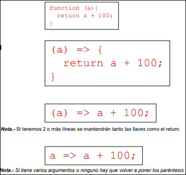
Módulos
Los módulos son ficheros que agrupan funciones o clases con un propósito común.
Reglas:
- suelen organizarse en carpetas separadas;
- se ha planteado la extensión
.mjs, pero no está generalizada; - se invocan a través de servidores;
- para usarlos en HTML se añade
type="module"a<script>; - se pueden importar nombres exportados, renombrarlos con
as, importar undefaulto combinardefaultcon nombres nodefault.
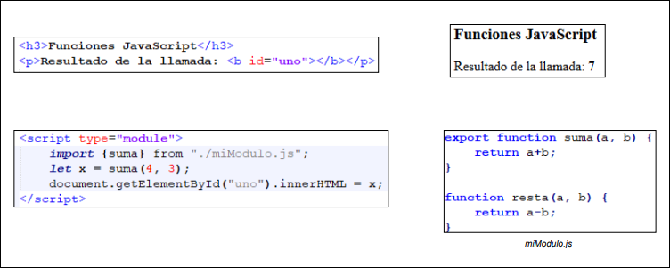
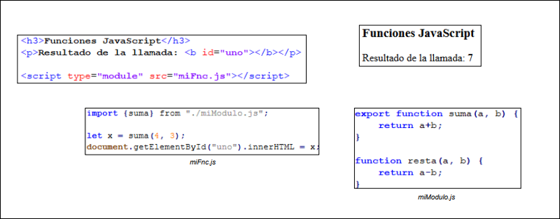
class, Map, Set y Symbol
ES6 introduce class como sintaxis moderna para clases. La herencia se hace con extends y super(). Los atributos siguen siendo públicos salvo que se usen mecanismos específicos modernos.
Mapas:
| Método/propiedad | Uso |
|---|---|
new Map() |
Crea un mapa. |
set(clave, valor) |
Fija valor para una clave. |
get(clave) |
Recupera valor. |
clear() |
Borra todos los elementos. |
keys() |
Iterador de claves. |
values() |
Iterador de valores. |
Los mapas son iterables en orden y sus claves pueden ser objetos.
Sets:
| Método | Uso |
|---|---|
new Set() |
Crea un conjunto. |
add(valor) |
Añade valor. |
delete(valor) |
Elimina valor. |
clear() |
Borra todo. |
values() |
Iterador con valores. |
Un Set almacena valores únicos.
Symbol es un tipo primitivo que representa un identificador único oculto, útil para evitar accesos accidentales. Se crea con Symbol("nombre"); se accede mediante [], no mediante punto.
4.5 Expresiones regulares y validación
Durante el intercambio de datos con el servidor conviene enviar datos consistentes para no corromper la información almacenada. Las expresiones regulares permiten definir patrones de cadenas y usarlos para comprobar información.
Definición y clase RegExp
Formas de crear expresiones regulares:
| Forma | Ejemplo |
|---|---|
| Literal | /patron/opciones. |
| Constructor | new RegExp("patron", "opciones"). |
Opciones:
i: no distingue mayúsculas/minúsculas;g: búsqueda global;m: búsqueda multilínea.
Clase RegExp:
| Tipo | Elemento | Uso |
|---|---|---|
| Método | exec() |
Comprueba coincidencias y retorna la primera. |
| Método | test() |
Devuelve true o false. |
| Método | toString() |
Devuelve la expresión como cadena. |
| Propiedad | global |
Indica si g está activado. |
| Propiedad | ignoreCase |
Indica si i está activado. |
| Propiedad | multiline |
Indica si m está activado. |
| Propiedad | lastIndex |
Posición de inicio de la siguiente coincidencia. |
| Propiedad | source |
Patrón como cadena. |
Métodos de String con regex:
| Método | Uso |
|---|---|
match() |
Busca coincidencias y devuelve array. |
matchAll() |
Devuelve iterador con coincidencias. |
search() |
Devuelve índice de la primera coincidencia. |
replace() |
Reemplaza texto usando regex. |
split() |
Divide la cadena usando regex como separador. |
Patrones y precedencia
| Patrón | Significado | |
|---|---|---|
* |
Cero o más veces. | |
+ |
Una o más veces. | |
? |
Cero o una vez. | |
\ |
Carácter de escape. | |
[conjunto] |
Cualquier carácter del conjunto. | |
\b |
Final de palabra. | |
\B |
No final de palabra. | |
^ |
Comienzo de cadena o línea. | |
$ |
Final de cadena o línea. | |
| ` | ` | Alternancia. |
(patron) |
Agrupación o captura. | |
(?:...) |
Subpatrón sin captura. | |
(?=...) |
Coincidencia si va seguida de otra expresión. | |
(?!...) |
Coincidencia si no va seguida de otra expresión. | |
{n} |
Exactamente n veces. |
|
{n,} |
Como mínimo n veces. |
|
{n,m} |
Entre n y m veces. |
|
\d |
Equivale a [0-9]. |
|
\w |
Equivale a letras, números y _. |
|
\W |
Negación de \w. |
|
\n, \r, \t, \f, \v, \s |
Abreviaturas de caracteres especiales o espacios. |
Precedencia:
\(),[]*,+,{n},{n,},{n,m}^,$|
Validación
Validación con JavaScript:
- interceptar envío de formulario;
- usar expresiones regulares;
- cancelar comportamiento con
preventDefault(); - avisar con
alert(); - devolver foco con
focus()o seleccionar texto conselect().
Validación HTML5:
| Atributo/tipo | Uso |
|---|---|
type="email" |
Campo de email con validación básica. |
type="url" |
Validación similar para URL. |
type="number" |
Validación similar para número. |
pattern |
Permite introducir una expresión regular. |
required |
Campo obligatorio; es booleano. |
4.6 jQuery
jQuery es una librería de funciones escrita en JavaScript, libre y de código abierto, creada por John Resig y presentada en enero de 2006 en BarCamp NYC.
Permite:
- simplificar interacción con documentos HTML;
- manipular el DOM;
- manejar eventos;
- crear animaciones;
- trabajar con AJAX.
Ventajas frente al DOM nativo:
- selecciones HTML más simples;
- varios métodos sobre la misma selección;
- robustez frente a diferencias entre navegadores;
- manejo de eventos más sencillo;
- métodos adicionales para animaciones;
- gestión de inconsistencias entre navegadores.
Puede integrarse descargando jquery.js o enlazándolo desde un CDN.
Sintaxis y selectores
Sintaxis básica:
$(selector).action()
| Parte | Significado |
|---|---|
$ |
Abreviatura de jQuery(). |
selector |
Selector con sintaxis CSS. |
action() |
Método aplicado al objeto jQuery. |
length |
Número de etiquetas seleccionadas. |
ready() ejecuta una función cuando el DOM está preparado: $(document).ready(function(){ ... }); la forma abreviada es $(function(){ ... }).
Selectores específicos:
| Selector | Uso |
|---|---|
$(this) |
Etiqueta actual. |
$("p:first") / $("p:last") |
Primera o última etiqueta p. |
$("ul li:first-child") |
Primer li de cada ul. |
$(":button") |
button e input type="button". |
$("tr:even") / $("tr:odd") |
Filas pares o impares. |
Métodos jQuery
| Grupo | Métodos |
|---|---|
| Contenido | html(), text(), replaceWith(), remove(). |
| Nodos | before(), after(), prepend(), append(), clone(), unwrap(), detach(), empty(), add(). |
| Atributos y estilos | attr(), removeAttr(), addClass(), removeClass(), css(). |
| Formularios | val(), isNumeric(). |
| Recorrido | find(), closest(), parent(), parents(), children(), siblings(), next(), nextAll(), prev(), prevAll(). |
| Lazos | each(); los ítems se acceden con this. |
| Testeo y filtrado | filter(), not(), has(), is(), $.contains(padre, hijo). |
| Orden | eq(), lt(), gt(). |
| Dimensión | height(), width(), innerHeight(), innerWidth(), outerHeight(), outerWidth(), $(document).height(), $(document).width(), $(window).height(), $(window).width(). |
| Posición | offset(), position(), scrollLeft(), scrollTop(). |
| Animación | show(), hide(), toggle(), fadeIn(), fadeOut(), fadeTo(), fadeToggle(), slideDown(), slideUp(), slideToggle(), delay(), stop(), animate(). |
Notas:
html()interpreta HTML;text()no lo interpreta.replaceWith()reemplaza el nodo entero.detach()es comoremove(), pero conserva una copia en memoria.height()ywidth()no incluyen margen, borde ni padding.innerHeight()einnerWidth()no incluyen margen ni borde.outerHeight()youterWidth()no incluyen margen.offset()se refiere a la esquina superior izquierda del documento;position()al ancestro.- todos los elementos retornados por una selección tienen índice.
Eventos jQuery
Dos formas:
$(selector).evento(function(e){ ... });$(selector).on("evento", function(e){ ... }).
on() es la forma moderna y recibe el evento y la función manejadora.
Objeto evento:
| Propiedad/método | Uso |
|---|---|
type |
Tipo de evento. |
which |
Botón o tecla que lo desencadena. |
target.nodeName |
Nombre del elemento seleccionado. |
pageX |
Posición del ratón desde el lado izquierdo del documento. |
pageY |
Posición del ratón desde la parte superior del documento. |
preventDefault() |
Evita la acción por defecto. |
stopPropagation() |
Detiene la propagación hacia ancestros. |
Tipos de eventos:
| Grupo | Eventos |
|---|---|
| UI | focus, blur, change. |
| Teclado | input, keydown, keyup, keypress. |
| Ratón | click, dblclick, mouseup, mousedown, mouseover, mousemove, mouseout, hover. |
| Formulario | submit, select, change. |
| Documento | ready, load, unload. |
| Navegador | error, resize, scroll. |
4.7 Ficheros de datos: XML y JSON
XML
XML (eXtensible Markup Language) es un lenguaje de marcas que describe información estructurada para facilitar el intercambio entre máquinas. Existen herramientas de fabricantes como Microsoft o Apache que facilitan su uso.
| Archivos de propiedades | Archivos XML |
|---|---|
| Jerarquía plana. | Estructuras jerárquicas con etiquetas. |
| No admiten repetición de valores. | Admiten estructuras repetidas y anidadas. |
XML frente a HTML:
| HTML | XML |
|---|---|
| Etiquetas predefinidas por estándar. | Etiquetas no predefinidas. |
| No distingue mayúsculas/minúsculas. | Sí distingue mayúsculas/minúsculas. |
| Existen atributos sin valor. | Todo atributo debe tener valor. |
| Más flexible con cierres. | Toda etiqueta debe cerrarse; elementos vacíos terminan en />. |
| Valores de atributos más flexibles. | Comillas simples o dobles, pero deben abrirse y cerrarse igual. |
Estructura XML:
- Encabezado opcional pero recomendado:
<?xml version="1.0" encoding="UTF-8"?>. - Definición de tipo de documento opcional, por ejemplo un
DOCTYPE. - Cuerpo con elementos hijos, texto o ambas cosas.
Consejos:
- evitar contenido mixto, es decir, texto y elementos al mismo nivel;
- usar atributos solo para modificar la interpretación de un valor, no para especificar valores.
XML DOM
El XML DOM define un estándar para acceder y manipular XML de manera similar al HTML DOM.
| Objeto/método/propiedad | Uso |
|---|---|
DOMParser |
Parsea XML almacenado en una cadena y lo convierte en documento DOM. |
XMLHttpRequest.responseXML |
Devuelve un XMLDocument con el XML de la petición. |
parseFromString(texto, tipoMime) |
Método de DOMParser que devuelve un XMLDocument. |
getElementsByTagName(nombre) |
Devuelve NodeList con etiquetas de ese nombre. |
appendChild(nodo) |
Inserta nodo hijo. |
removeChild(nodo) |
Elimina nodo hijo. |
nodeName |
Nombre del nodo. |
nodeValue |
Valor del nodo. |
nodeType |
Tipo del nodo. |
parentNode |
Padre del nodo. |
childNodes |
Hijos del nodo. |
attributes |
NamedNodeMap con atributos. |
JSON
JSON (JavaScript Object Notation) es un formato de almacenamiento e intercambio de datos creado inicialmente en 1999 en el ámbito de JS y extendido a muchos lenguajes.
Características:
- sencillo para máquinas y humanos;
- en JS se maneja como objeto;
- puede convertirse a cadena para intercambio entre servidores;
JSON.stringify(obj)transforma objetos JS en cadenas JSON;JSON.parse(cadena)transforma cadenas JSON en objetos JS.
Formato:
| Estructura | En JS |
|---|---|
| Colección de pares nombre/valor | Objetos: { cadena: valor, ... }. |
| Lista ordenada de valores | Arrays: [valor, valor, ...]. |
Valores admitidos: cadenas, números, objetos, arrays, booleanos y null.
XML vs JSON
Similitudes:
- ambos son autodescriptivos;
- ambos son jerárquicos;
- ambos son parseables;
- ambos son tratables mediante
XMLHttpRequest.
Diferencias:
- XML necesita parser XML; JSON usa funciones estándar de JS;
- JSON no usa etiquetas;
- JSON es más rápido en lectura y escritura;
- JSON puede usar arrays.
4.8 AJAX, promesas y Fetch
MPA, SPA y procesamiento asíncrono
| Modelo | Idea |
|---|---|
| MPA | Multi-Page Application: cada página es una petición al servidor que devuelve un HTML completo. |
| SPA | Single-Page Application: una única página HTML sobrescribe contenido dinámicamente sin cargar una nueva página. |
Procesamiento:
- síncrono: al encontrar
<script>, el navegador lo procesa y detiene la carga del resto de la página; si el script espera datos externos, la carga se bloquea; - asíncrono: AJAX carga datos en segundo plano y permite continuar con el resto del documento.
AJAX (Asynchronous JavaScript And XML) es una técnica para acceder al servidor desde la página web. Nace en febrero de 2005 de la mano de Jesse James Garrett.
Permite:
- actualizar una página sin recargarla;
- pedir datos al servidor después de cargar la página;
- recibir datos después de cargar la página;
- enviar datos en background;
- desarrollar SPA.
AJAX combina:
- JS y HTML DOM para mostrar datos;
- un objeto
XMLHttpRequestconstruido en el navegador.
El motor AJAX es el objeto o función JS invocado cuando se realiza una petición al servidor.
XMLHttpRequest
XMLHttpRequest fue diseñado por Microsoft y hoy es estándar W3C. Sirve para insertar datos en una página sin recargarla.
Métodos:
| Método | Uso |
|---|---|
abort() |
Cancela la solicitud. |
getAllResponseHeaders() |
Devuelve cabeceras. |
getResponseHeader(nombre) |
Devuelve cabecera concreta. |
open(method, url, async, user, psw) |
Especifica solicitud: método GET, POST, PUT, DELETE; URL; modo asíncrono; usuario y contraseña opcionales. |
send() |
Envía solicitud GET. |
send(string) |
Envía solicitud POST. |
setRequestHeader(header, value) |
Añade par etiqueta/valor a la cabecera. |
Atributos:
| Atributo | Uso |
|---|---|
onreadystatechange |
Callback cuando cambia readyState. |
onload |
Callback cuando se recibe la petición; navegadores modernos lo soportan y suele usarse. |
readyState |
Estado de la petición. |
responseText |
Respuesta en texto. |
responseXML |
Respuesta en XML. |
status |
Código de estado: 200 OK, 403 prohibido, 404 no encontrado, etc. |
statusText |
Texto del estado. |
readyState:
| Valor | Estado |
|---|---|
0 |
Petición no inicializada. |
1 |
Conexión con servidor establecida. |
2 |
Petición recibida. |
3 |
Procesando petición. |
4 |
Petición finalizada y respuesta lista. |
Funcionamiento:
- crear objeto:
let miHttp = new XMLHttpRequest();; - definir callback con
onreadystatechangeuonload; - abrir con
open("GET", "miFile"); - enviar con
send().
Promesas y AJAX con jQuery
Una promesa representa la terminación correcta o el fracaso de una operación asíncrona.
Forma general:
new Promise(function(siExito, siFracaso) { ... siExito(valor); siFracaso(valor); })
then(siExito, siFracaso) define callbacks de éxito o fracaso.
AJAX con jQuery usa load():
.load(url, [data, function(response, status, xhr)])
| Parámetro | Uso |
|---|---|
url |
URL de datos a cargar. |
data |
Datos enviados junto a la petición. |
response |
Datos resultantes. |
status |
Estado de la petición. |
xhr |
Objeto XMLHttpRequest. |
Fetch
Desventajas de XMLHttpRequest:
- diferencias entre fabricantes o versiones de navegador;
- uso de callbacks, que puede desordenar el código.
La solución tradicional era usar herramientas de terceros, como jQuery. Fetch es una interfaz estándar para AJAX basada en promesas.
window.fetch(url) o fetch(url) trae al cliente el contenido de la URL y devuelve una promesa que resuelve en un objeto Response, incluso si el servidor devuelve un código de error HTTP.
Objeto Response:
| Método/propiedad | Uso |
|---|---|
.text() |
Promesa con representación en texto. |
.json() |
Promesa con representación JSON. |
.formData() |
Promesa con pares clave/valor. |
.bytes() |
Promesa con bytes. |
.status |
Código de estado. |
.ok |
Booleano de éxito; normalmente 200 a 299. |
.headers |
Cabeceras de la respuesta. |
.url |
URL de la respuesta. |
fetch()no rechaza la promesa por un404o un500; conviene comprobarresponse.ok;- para texto se encadena
response.text(); - para JSON se usa
response.json(); - para XML se puede recibir texto y parsearlo con
DOMParser.